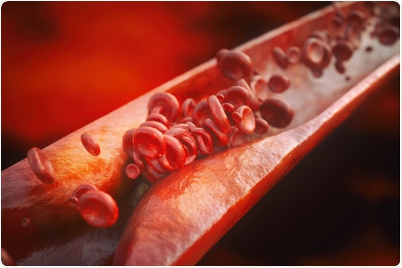

Worry About Your Heart Is
Worry About Your Heart Is  or Not??
Lets Check Out It
or Not??
Lets Check Out It
Heart disease is the leading cause of death for men, women, and people of most racial and ethnic groups in the India
One person dies every 36 seconds in the India from cardiovascular disease
About 659,000 people in the India die from heart disease each year—that’s 1 in every 4 deaths
Heart disease costs the India about $363 billion each year from 2016 to 2017.2 This includes the cost of health care services, medicines, and lost productivity due to death.